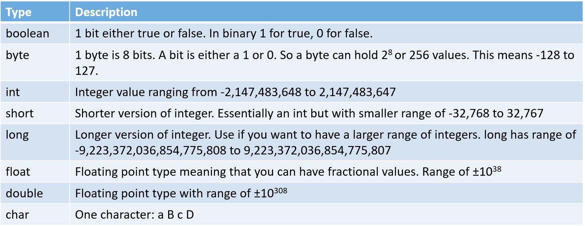
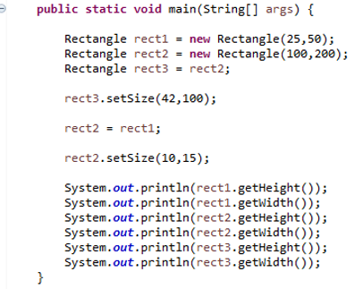

If we think back to the last two lessons you might have noticed something. When we declared some variables sometimes we used capitals for the type like we did with Person bobby = new Person(); or Rectangle rect1 = new Rectangle(); (Person and Rectangle are capitalized) Other times they were lower case, int width = 10; (int is lower case). This is because Java categorizes variables in two ways: either they are one of the 8 primitive types, or they are a reference to an object. Let's explore the primitive types and object references further.
Primitive types are the basic building blocks of a Java program. If we make an analogy to chemistry we can think of them as the individual atoms of a molecule.
Below is a list of the 8 primitive types in Java:
int:
booleans:
double:
Casting occurs when you convert from one primitive type to another. For example, converting from a double to an int or int to double.
There are two "kinds" of casting. One in which you will lose precision and one where you will gain precision. Let's look at an example for each.
Click the buttons for an explaination.
Gaining Precision:
Losing Precision:
Earlier we mentions how variable are either the type of one of the 8 primitive types or they are a reference to an object. References are the variables of objects, not primitive types, but to best understand what references are let's compare them to primitive types.
Click the buttons for an explaination.
References:
Primitive Types:
Click the buttons for hints:
Directions: Trace through the following code and attempt to determine what is printed.
Enter Answer Here:
(getHeight and getWidth return doubles)